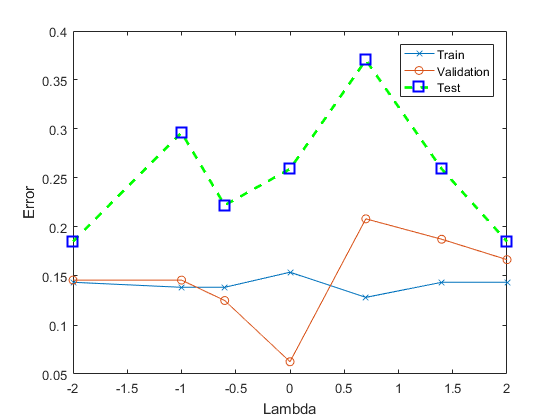

clear all;
data = load('heartstatlog_trainSet.txt');
labels = load('heartstatlog_trainLabels.txt');
dataTest = load('heartstatlog_testSet.txt');
labelTest = load('heartstatlog_testLabels.txt');
data = bsxfun(@rdivide,bsxfun(@minus,data,mean(data)),std(data));
labels = 2*(labels - 1.5);
labelTest = 2*(labelTest - 1.5);
kernel = data*data';
kernelTest = data*dataTest';
C = [0.01 0.1 0.25 1 5 25 100];
for j = 1:size(C,2)
k = 5;
Ntrain=length(data);
ind = randperm(Ntrain);
testInd=ind(1:floor(Ntrain/k))';
trainData = data;
trainLabels = labels;
trainData(testInd,:) = [];
trainLabels(testInd,:) = [];
testData = data(testInd,:);
testLabels = labels(testInd,:);
kernelCVTrain = kernel;
kernelCVTrain(testInd,:) = [];
kernelCVTrain(:,testInd) = [];
kernelCVTest = kernel(1:size(trainData,1),testInd);
kernelCVVal = kernel(1:size(testData,1),testInd);
kernelTrain = data(1:size(trainData,1),:)*data(1:size(trainData,1),:)';
kernelTestCV = kernelTest(1:size(trainData,1),:);
alpha = ones(size(kernelCVTrain,1),1)*(0.5)*(1/C(j));
fun3 = @(alpha)objFun3(alpha,trainLabels,kernelCVTrain,C(j));
A = [];
b = [];
Aeq = trainLabels';
beq = 0;
lb = zeros(size(kernelCVTrain,1),1);
ub = C(j)*ones(size(trainLabels,1),1);
opAlpha = fmincon(fun3,alpha,A,b,Aeq,beq,lb,ub);
supporters = find(opAlpha > 1e-5);
b = 0;
bias = @(b)objBias3(b,opAlpha,trainLabels,kernelCVTrain,C(j));
opB(j) = fminunc(bias,b);
predVal = sign((((opAlpha.*trainLabels)/C(j))'*kernelCVTest)' + opB(j));
errorsCVValid(:,j) = sum(predVal ~= testLabels)/length(testLabels);
predTrain = sign((((opAlpha.*trainLabels)/C(j))'*kernelTrain)' + opB(j));
errorsCVTrain(:,j) = sum(predTrain ~= labels(1:length(predTrain)))/length(predTrain);
predTest = sign((((opAlpha.*trainLabels)/C(j))'*kernelTestCV)' + opB(j));
errorsTestCV(:,j) = sum(predTest ~= labelTest)/length(labelTest);
end
[minErrorCV,lambdaInd] = min(errorsCVValid);
bestLambda = C(lambdaInd);
bestB = opB(lambdaInd);
A = [];
b = [];
Aeq = labels';
beq = 0;
lb = zeros(size(kernel,1),1);
ub = bestLambda*ones(size(labels,1),1);
alpha = ones(size(kernel,1),1)*(0.5)*(1/bestLambda);
fun3 = @(alpha)objFun3(alpha,labels,kernel,bestLambda);
trainAlpha = fmincon(fun3,alpha,A,b,Aeq,beq,lb,ub);
supporters = find(trainAlpha > 1e-5);
b = 0;
bias = @(b)objBias3(b,trainAlpha,labels,kernel,bestLambda);
trainB = fminunc(bias,b);
pred = sign((((trainAlpha.*labels)/bestLambda)'*kernel)' + trainB);
errorsTrain = sum(pred ~= labels)/length(labels);
pred = sign((((trainAlpha.*labels)/bestLambda)'*kernelTest)' + bestB);
errorsTest = sum(pred ~= labelTest)/length(labelTest);
figure
plot(log10(C),errorsCVTrain,'-x');
hold on
plot(log10(C),errorsCVValid,'-o');
hold on
plot(log10(C),errorsTestCV,'--gs','LineWidth',2,'MarkerSize',10,'MarkerEdgeColor','b');
legend('Train','Validation','Test');
xlabel('Lambda');
ylabel('Error');
Solver stopped prematurely.
fmincon stopped because it exceeded the function evaluation limit,
options.MaxFunctionEvaluations = 3000 (the default value).
Warning: Gradient must be provided for trust-region algorithm; using
quasi-newton algorithm instead.
Local minimum possible.
fminunc stopped because it cannot decrease the objective function
along the current search direction.
Solver stopped prematurely.
fmincon stopped because it exceeded the function evaluation limit,
options.MaxFunctionEvaluations = 3000 (the default value).
Warning: Gradient must be provided for trust-region algorithm; using
quasi-newton algorithm instead.
Local minimum found.
Optimization completed because the size of the gradient is less than
the default value of the optimality tolerance.
Local minimum possible.
fminunc stopped because it cannot decrease the objective function
along the current search direction.
Solver stopped prematurely.
fmincon stopped because it exceeded the function evaluation limit,
options.MaxFunctionEvaluations = 3000 (the default value).
Warning: Gradient must be provided for trust-region algorithm; using
quasi-newton algorithm instead.
Local minimum found.
Optimization completed because the size of the gradient is less than
the default value of the optimality tolerance.
Solver stopped prematurely.
fmincon stopped because it exceeded the function evaluation limit,
options.MaxFunctionEvaluations = 3000 (the default value).
Warning: Gradient must be provided for trust-region algorithm; using
quasi-newton algorithm instead.
Local minimum found.
Optimization completed because the size of the gradient is less than
the default value of the optimality tolerance.
Solver stopped prematurely.
fmincon stopped because it exceeded the function evaluation limit,
options.MaxFunctionEvaluations = 3000 (the default value).
Warning: Gradient must be provided for trust-region algorithm; using
quasi-newton algorithm instead.
Local minimum found.
Optimization completed because the size of the gradient is less than
the default value of the optimality tolerance.
Solver stopped prematurely.
fmincon stopped because it exceeded the function evaluation limit,
options.MaxFunctionEvaluations = 3000 (the default value).
Warning: Gradient must be provided for trust-region algorithm; using
quasi-newton algorithm instead.
Local minimum found.
Optimization completed because the size of the gradient is less than
the default value of the optimality tolerance.
Solver stopped prematurely.
fmincon stopped because it exceeded the function evaluation limit,
options.MaxFunctionEvaluations = 3000 (the default value).
Warning: Gradient must be provided for trust-region algorithm; using
quasi-newton algorithm instead.
Local minimum possible.
fminunc stopped because it cannot decrease the objective function
along the current search direction.
Solver stopped prematurely.
fmincon stopped because it exceeded the function evaluation limit,
options.MaxFunctionEvaluations = 3000 (the default value).
Warning: Gradient must be provided for trust-region algorithm; using
quasi-newton algorithm instead.
Local minimum found.
Optimization completed because the size of the gradient is less than
the default value of the optimality tolerance.
